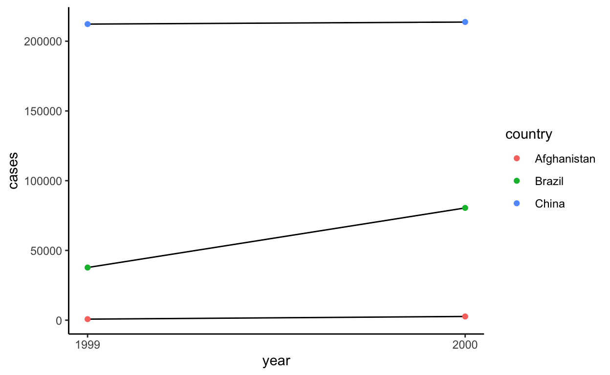

R4DS 09 - Tidy Data with tidyr
The codes below are from the practice exercises in https://r4ds.had.co.nz/, and are taken with reference from: https://jrnold.github.io/r4ds-exercise-solutions/
Loading tidyverse package.
Compute the rate for table two.
table2
# A tibble: 12 x 4
country year type count
<chr> <int> <chr> <int>
1 Afghanistan 1999 cases 745
2 Afghanistan 1999 population 19987071
3 Afghanistan 2000 cases 2666
4 Afghanistan 2000 population 20595360
5 Brazil 1999 cases 37737
6 Brazil 1999 population 172006362
7 Brazil 2000 cases 80488
8 Brazil 2000 population 174504898
9 China 1999 cases 212258
10 China 1999 population 1272915272
11 China 2000 cases 213766
12 China 2000 population 1280428583# Extract the number of TB cases per country per year.
table2_cases <- table2 %>%
filter(type == "cases") %>%
dplyr::rename(cases = count) %>%
arrange(country, year)
table2_population <- table2 %>%
filter(type == "population") %>%
dplyr::rename(population = count) %>%
arrange(country, year)
# create a new dataframe with the population and cases columns and calculate the cases per capita
t2_cases_per_cap <- tibble(
year = table2_cases$year,
country = table2_cases$country,
cases = table2_cases$cases,
population = table2_population$population
) %>%
mutate(cases_per_cap = cases/population* 10000) %>%
select(country, year, cases_per_cap) %>%
mutate(type = "cases_per_cap") %>%
dplyr::rename(count = cases_per_cap)
t2_cases_per_cap
# A tibble: 6 x 4
country year count type
<chr> <int> <dbl> <chr>
1 Afghanistan 1999 0.373 cases_per_cap
2 Afghanistan 2000 1.29 cases_per_cap
3 Brazil 1999 2.19 cases_per_cap
4 Brazil 2000 4.61 cases_per_cap
5 China 1999 1.67 cases_per_cap
6 China 2000 1.67 cases_per_capbind_rows(table2, t2_cases_per_cap) %>%
arrange(country, year, type, count)
# A tibble: 18 x 4
country year type count
<chr> <int> <chr> <dbl>
1 Afghanistan 1999 cases 7.45e+2
2 Afghanistan 1999 cases_per_cap 3.73e-1
3 Afghanistan 1999 population 2.00e+7
4 Afghanistan 2000 cases 2.67e+3
5 Afghanistan 2000 cases_per_cap 1.29e+0
6 Afghanistan 2000 population 2.06e+7
7 Brazil 1999 cases 3.77e+4
8 Brazil 1999 cases_per_cap 2.19e+0
9 Brazil 1999 population 1.72e+8
10 Brazil 2000 cases 8.05e+4
11 Brazil 2000 cases_per_cap 4.61e+0
12 Brazil 2000 population 1.75e+8
13 China 1999 cases 2.12e+5
14 China 1999 cases_per_cap 1.67e+0
15 China 1999 population 1.27e+9
16 China 2000 cases 2.14e+5
17 China 2000 cases_per_cap 1.67e+0
18 China 2000 population 1.28e+9Repeat for table4a and table 4b
table4a
# A tibble: 3 x 3
country `1999` `2000`
* <chr> <int> <int>
1 Afghanistan 745 2666
2 Brazil 37737 80488
3 China 212258 213766table4b
# A tibble: 3 x 3
country `1999` `2000`
* <chr> <int> <int>
1 Afghanistan 19987071 20595360
2 Brazil 172006362 174504898
3 China 1272915272 1280428583table4c <- tibble(
country = table4a$country,
`1999` = table4a$`1999`/table4b$`1999`*10000,
`2000` = table4a$`2000`/table4b$`2000`*10000
)
table4c
# A tibble: 3 x 3
country `1999` `2000`
<chr> <dbl> <dbl>
1 Afghanistan 0.373 1.29
2 Brazil 2.19 4.61
3 China 1.67 1.67Plot the number of cases for different years for different countries using table 2.
table2 %>%
dplyr::filter(type == "cases") %>%
ggplot(aes(year, count, group = country)) +
geom_line(aes(group = country)) +
geom_point(aes(group = country, col = country)) +
labs(x = "year", y = "cases") +
scale_x_continuous(breaks = unique(table2$year)) +
theme_classic()

table4a
# A tibble: 3 x 3
country `1999` `2000`
* <chr> <int> <int>
1 Afghanistan 745 2666
2 Brazil 37737 80488
3 China 212258 213766tidy4a <- table4a %>%
pivot_longer(c(`1999`, `2000`),
names_to = "year",
values_to = "cases")
tidy4a
# A tibble: 6 x 3
country year cases
<chr> <chr> <int>
1 Afghanistan 1999 745
2 Afghanistan 2000 2666
3 Brazil 1999 37737
4 Brazil 2000 80488
5 China 1999 212258
6 China 2000 213766table4b
# A tibble: 3 x 3
country `1999` `2000`
* <chr> <int> <int>
1 Afghanistan 19987071 20595360
2 Brazil 172006362 174504898
3 China 1272915272 1280428583tidy4b <- table4b %>%
pivot_longer(c(`1999`, `2000`),
names_to = "year",
values_to = "population"
)
tidy4b
# A tibble: 6 x 3
country year population
<chr> <chr> <int>
1 Afghanistan 1999 19987071
2 Afghanistan 2000 20595360
3 Brazil 1999 172006362
4 Brazil 2000 174504898
5 China 1999 1272915272
6 China 2000 1280428583Why are pivot_longer() and pivot_wider() not perfectly symmetrical?
stocks <- tibble(
year = c(2015, 2015, 2016, 2016),
half = c( 1, 2, 1, 2),
return = c(1.88, 0.59, 0.92, 0.17)
)
stocks
# A tibble: 4 x 3
year half return
<dbl> <dbl> <dbl>
1 2015 1 1.88
2 2015 2 0.59
3 2016 1 0.92
4 2016 2 0.17stocks %>%
pivot_wider(names_from = year,
values_from = return) %>%
pivot_longer(`2015`: `2016`,
names_to = "year",
values_to = "return")
# A tibble: 4 x 3
half year return
<dbl> <chr> <dbl>
1 1 2015 1.88
2 1 2016 0.92
3 2 2015 0.59
4 2 2016 0.17Year became a character column instead of dbl. When the data frame is converted from wide to long, the column type information is lost.
stocks %>%
pivot_wider(names_from = year,
values_from = return) %>%
pivot_longer(`2015`: `2016`,
names_to = "year",
values_to = "return",
names_transform = list(year = as.numeric))
# A tibble: 4 x 3
half year return
<dbl> <dbl> <dbl>
1 1 2015 1.88
2 1 2016 0.92
3 2 2015 0.59
4 2 2016 0.17Why does widening the table below fail? How would you add a new column to uniquely identify each value?
people <- tribble(
~name, ~key, ~value,
# # # # # # # # # # # # #
"Phillip", "age", 45,
"Phillip", "height", 186,
"Phillip", "age", 50,
"Jessica", "age", 37,
"Jessica", "height",156
)
people %>%
group_by(name, key) %>%
mutate(obs = row_number()) %>%
pivot_wider(names_from = "name",
values_from = "value")
# A tibble: 3 x 4
# Groups: key [2]
key obs Phillip Jessica
<chr> <int> <dbl> <dbl>
1 age 1 45 37
2 height 1 186 156
3 age 2 50 NATidy the tibble below:
preg <- tribble(
~pregnant, ~male, ~female,
###
"yes", NA, 10,
"no", 20, 12
)
preg %>%
pivot_longer(cols = c(male, female),
names_to = "sex",
values_to = "count",
values_drop_na = T)
# A tibble: 3 x 3
pregnant sex count
<chr> <chr> <dbl>
1 yes female 10
2 no male 20
3 no female 12table3
# A tibble: 6 x 3
country year rate
* <chr> <int> <chr>
1 Afghanistan 1999 745/19987071
2 Afghanistan 2000 2666/20595360
3 Brazil 1999 37737/172006362
4 Brazil 2000 80488/174504898
5 China 1999 212258/1272915272
6 China 2000 213766/1280428583table3 %>%
separate(rate, into = c("cases", "population"),
convert = T)
# A tibble: 6 x 4
country year cases population
<chr> <int> <int> <int>
1 Afghanistan 1999 745 19987071
2 Afghanistan 2000 2666 20595360
3 Brazil 1999 37737 172006362
4 Brazil 2000 80488 174504898
5 China 1999 212258 1272915272
6 China 2000 213766 1280428583What do extra and fill arguments do in separate()?
# separate
tibble(x = c("a,b,c", "d,e,f,g", "h,i,j")) %>%
separate(x, c("one" , "two", "three"),
extra = "drop") # remove extra g
# A tibble: 3 x 3
one two three
<chr> <chr> <chr>
1 a b c
2 d e f
3 h i j tibble(x = c("a,b,c", "d,e,f,g", "h,i,j")) %>%
separate(x, c("one" , "two", "three"),
extra = "merge") # merge g to f
# A tibble: 3 x 3
one two three
<chr> <chr> <chr>
1 a b c
2 d e f,g
3 h i j # fill
tibble(x = c("a,b,c", "d,e", "f,g,i")) %>%
separate(x, c("one", "two", "three"),
fill = "right") # fill to right
# A tibble: 3 x 3
one two three
<chr> <chr> <chr>
1 a b c
2 d e <NA>
3 f g i tibble(x = c("a,b,c", "d,e", "f,g,i")) %>%
separate(x, c("one", "two", "three"),
fill = "left") # fill to left
# A tibble: 3 x 3
one two three
<chr> <chr> <chr>
1 a b c
2 <NA> d e
3 f g i stocks <- tibble(
year = c(2015, 2015, 2015, 2015, 2016, 2016, 2016),
qtr = c( 1,2,3,4,2,3,4),
return = c(1.88, 0.59, 0.35,NA, 0.92, 0.17, 2.66)
)
stocks
# A tibble: 7 x 3
year qtr return
<dbl> <dbl> <dbl>
1 2015 1 1.88
2 2015 2 0.59
3 2015 3 0.35
4 2015 4 NA
5 2016 2 0.92
6 2016 3 0.17
7 2016 4 2.66stocks %>%
pivot_wider(names_from = year,
values_from = return,
values_fill = 0)
# A tibble: 4 x 3
qtr `2015` `2016`
<dbl> <dbl> <dbl>
1 1 1.88 0
2 2 0.59 0.92
3 3 0.35 0.17
4 4 NA 2.66# replace the missing values with 0 using complete()
stocks %>%
complete(year, qtr, fill = list(return = 0))
# A tibble: 8 x 3
year qtr return
<dbl> <dbl> <dbl>
1 2015 1 1.88
2 2015 2 0.59
3 2015 3 0.35
4 2015 4 0
5 2016 1 0
6 2016 2 0.92
7 2016 3 0.17
8 2016 4 2.66# TB dataset broken down by year, country, age, gender , diagnosis method.
who
# A tibble: 7,240 x 60
country iso2 iso3 year new_sp_m014 new_sp_m1524 new_sp_m2534
<chr> <chr> <chr> <int> <int> <int> <int>
1 Afghanistan AF AFG 1980 NA NA NA
2 Afghanistan AF AFG 1981 NA NA NA
3 Afghanistan AF AFG 1982 NA NA NA
4 Afghanistan AF AFG 1983 NA NA NA
5 Afghanistan AF AFG 1984 NA NA NA
6 Afghanistan AF AFG 1985 NA NA NA
7 Afghanistan AF AFG 1986 NA NA NA
8 Afghanistan AF AFG 1987 NA NA NA
9 Afghanistan AF AFG 1988 NA NA NA
10 Afghanistan AF AFG 1989 NA NA NA
# … with 7,230 more rows, and 53 more variables: new_sp_m3544 <int>,
# new_sp_m4554 <int>, new_sp_m5564 <int>, new_sp_m65 <int>,
# new_sp_f014 <int>, new_sp_f1524 <int>, new_sp_f2534 <int>,
# new_sp_f3544 <int>, new_sp_f4554 <int>, new_sp_f5564 <int>,
# new_sp_f65 <int>, new_sn_m014 <int>, new_sn_m1524 <int>,
# new_sn_m2534 <int>, new_sn_m3544 <int>, new_sn_m4554 <int>,
# new_sn_m5564 <int>, new_sn_m65 <int>, new_sn_f014 <int>,
# new_sn_f1524 <int>, new_sn_f2534 <int>, new_sn_f3544 <int>,
# new_sn_f4554 <int>, new_sn_f5564 <int>, new_sn_f65 <int>,
# new_ep_m014 <int>, new_ep_m1524 <int>, new_ep_m2534 <int>,
# new_ep_m3544 <int>, new_ep_m4554 <int>, new_ep_m5564 <int>,
# new_ep_m65 <int>, new_ep_f014 <int>, new_ep_f1524 <int>,
# new_ep_f2534 <int>, new_ep_f3544 <int>, new_ep_f4554 <int>,
# new_ep_f5564 <int>, new_ep_f65 <int>, newrel_m014 <int>,
# newrel_m1524 <int>, newrel_m2534 <int>, newrel_m3544 <int>,
# newrel_m4554 <int>, newrel_m5564 <int>, newrel_m65 <int>,
# newrel_f014 <int>, newrel_f1524 <int>, newrel_f2534 <int>,
# newrel_f3544 <int>, newrel_f4554 <int>, newrel_f5564 <int>,
# newrel_f65 <int># make the dataset into a long shape
who1 <- who %>%
pivot_longer(cols = new_sp_m014:newrel_f65,
names_to = "key",
values_to = "cases",
values_drop_na = T) %>%
mutate(names_from = str_replace(key, "newrel", "new_rel")) %>%
separate(key, c("new", "type", "sexage"), sep = "_") %>%
select(-new, -iso2, -iso3) %>%
separate(sexage, c("sex", "age"), sep =1)
glimpse(who1)
Rows: 76,046
Columns: 7
$ country <chr> "Afghanistan", "Afghanistan", "Afghanistan", "Afg…
$ year <int> 1997, 1997, 1997, 1997, 1997, 1997, 1997, 1997, 1…
$ type <chr> "sp", "sp", "sp", "sp", "sp", "sp", "sp", "sp", "…
$ sex <chr> "m", "m", "m", "m", "m", "m", "m", "f", "f", "f",…
$ age <chr> "014", "1524", "2534", "3544", "4554", "5564", "6…
$ cases <int> 0, 10, 6, 3, 5, 2, 0, 5, 38, 36, 14, 8, 0, 1, 30,…
$ names_from <chr> "new_sp_m014", "new_sp_m1524", "new_sp_m2534", "n…https://jrnold.github.io/r4ds-exercise-solutions/